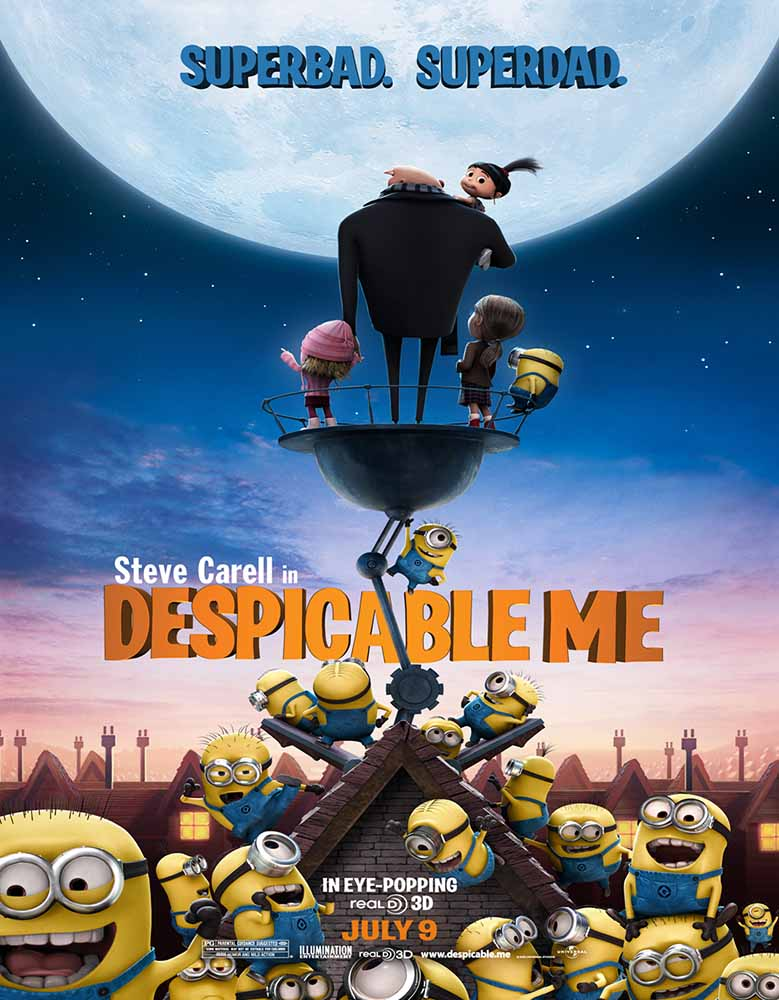
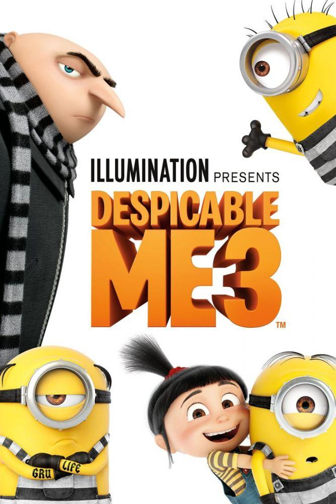

- Despicable Me 1
- In a happy suburban neighborhood surrounded by white picket fences with flowering rose bushes, sits a black house with a dead lawn. Unbeknownst to the neighbors, hidden beneath this house is a vast secret hideout. Surrounded by a small army of minions, we discover Gru (Steve Carell), planning the biggest heist in the history of the world. He is going to steal the moon. Gru delights in all things wicked. Armed with his arsenal of shrink rays, freeze rays, and battle-ready vehicles for land and air, he vanquishes all who stand in his way. Until the day he encounters the immense will of three little orphaned girls who look at him and see something that no one else has ever seen: a potential Dad. The world's greatest villain has just met his greatest challenge: three little girls named Margo (Miranda Cosgrove), Edith (Dana Gaier), and Agnes (Elsie Fisher). Written by Universal Pictures

- Despicable Me 2
- While Gru, the ex-supervillain is adjusting to family life and an attempted honest living in the jam business, a secret Arctic laboratory is stolen. The Anti-Villain League decides it needs an insider's help and recruits Gru in the investigation. Together with the eccentric AVL agent, Lucy Wilde, Gru concludes that his prime suspect is the presumed dead supervillain, El Macho, whose his teenage son is also making the moves on his eldest daughter, Margo. Seemingly blinded by his overprotectiveness of his children and his growing mutual attraction to Lucy, Gru seems on the wrong track even as his minions are being quietly kidnapped en masse for some malevolent purpose.

- Despicable Me 3
- After he is fired from the Anti-Villain League for failing to take down the latest bad guy to threaten humanity, Gru (Steve Carell) finds himself in the midst of a major identity crisis. But when a mysterious stranger shows up to inform Gru that he has a long-lost twin brother - a brother who desperately wishes to follow in his twin's despicable footsteps - one former supervillain will rediscover just how good it feels to be bad.